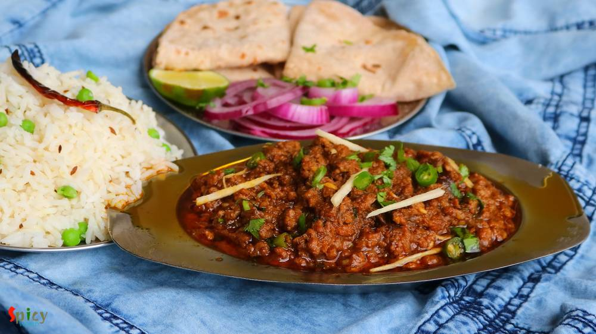

Simple and Easy Recipes
Dhaba style Keema Masala / Minced Mutton Curry
© 2016 Spicy World, Published on: Nov 13, 2018
In India many dhabas and restaurants sell Keema Masala which is minced mutton curry. Keema means mince. This is a delicious non veg gravy which goes best with plain chapati or naan. In Keema Masala, minced mutton will be cooked in a onion tomato based sauce along with some flavorful spices and lots of fresh green chilies and coriander leaves. Try this recipe in your kitchen and enjoy a wonderful dinner with your loved ones.

Ingredients
- 500 grams of finely minced mutton.
- 2 medium onion, thinly sliced.
- 1 tomato, cut into chunks.
- 6-7 big cloves of garlic.
- 2-3 inches ginger.
- 3 green chilies, chopped.
- 3-4 green cardamom.
- Spice powder 1 Teaspoon of each (turmeric powder, red chili powder, roasted cumin and coriander powder).
- Half Teaspoon of garam masala powder.
- 1 Teaspoon of kasuri methi or dry fenugreek leaves.
- 4 Tablespoons of chopped coriander leaves.
- Salt and sugar.
- 1/4th cup of vegetable oil.
- 1/4th cup of water.
- Some julienne cut ginger.


Steps
Make a smooth paste out of tomato, garlic and ginger along with little water.
Now heat the oil in a pan.
Fry the onion slices with a pinch of salt until they become golden in color.
Then add the tomato ginger garlic paste and cook on medium flame until the oil separates. After that add all of the spice powder and green cardamom. Mix for 2-3 minutes on low flame.
Then add the minced mutton and fry on high heat for 15-20 minutes. Keep stirring.
Add some salt and sugar and cook for a minute.
Then transfer the meat in a pressure cooker along with the water. Cook until 3-4 whistles come and let the pressure release on its own.
When the meat will become transfer it to the previous pan. If the gravy seems runny, cook on high flame until it becomes thick.
Lastly add garam masala powder, kasuri methi, ginger julienne, chopped green chilies and coriander leaves. Mix well for 2 minutes then turn off the heat.
Your keema masala is ready to serve.
Serve this hot with plain chapati or naan or jeera rice.
")